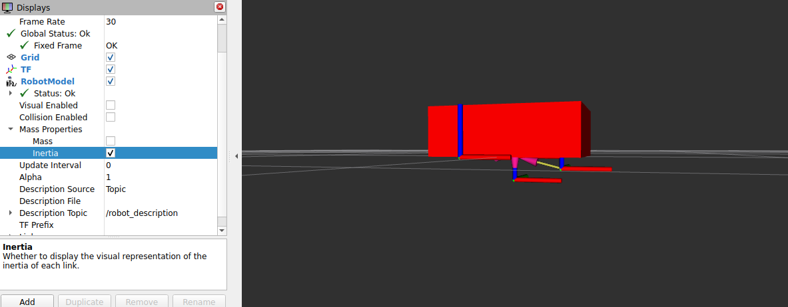

1. Desarrollando un Macro de Inercia (Caja Básica)

Desarrollar y calcular a ojo de halcón las matrices tensoras para cada pieza de un vehículo es un trabajo inhumano. Aprovecharemos la alta modularidad que nos brinda Xacro para crear una Macro que auto calcule estas ecuaciones complejas en el sub-proceso. Usaremos la versión de cálculo estandarizada para figuras tridimensionales planas (Cajas y Prismas rectangulares).
Abre el archivo maestro common_properties.xacro y deposita este bloque calculador en su interior:
<xacro:macro name="box_inertia" params="m x y z o_xyz o_rpy">
<inertial>
<mass value="${m}" />
<origin xyz="${o_xyz}" rpy="${o_rpy}" />
<inertia ixx="${(m/12) * (y*y + z*z)}" ixy="0" ixz="0"
iyy="${(m/12) * (x*x + z*z)}" iyz="0"
izz="${(m/12) * (x*x + y*y)}" />
</inertial>
</xacro:macro>Analizando la algoritmia del código:
<xacro:macro ...>: Nombramos a la función recibiendo atributos de masa (m), las tres proporciones de sus perfiles (x, y, z), y la posición para la desviación u offset de su masa teórica (o_xyz).<mass value="${m}" />: Traspasa el peso recibido directo al cerebro de Gazebo.El tag
<inertia .../>: Es el cerebro de esta macro. Ejecuta la ecuación física de tensor volumétrico base realMasa/12 * (Lado 1 al Cuadrado + Lado 2 al Cuadrado). Inyecta el resultado calculado de los vectores directos y deja sin interferencias o en estado “0” a sus diagonales cruzadas (ixy,ixz, etc).
2. Atrayendo Inercia a nuestro Chasis (base_link)
Ya que nuestro chasis central no es más que una caja rectangular masiva, emplear en el esta macro recien creada es el requerimiento lógico a seguir. Le daremos la inyección física justo después de cerrar su etiqueta visual </visual>.
Abre mobile_base.xacro y agrega el llamado de inercia proveyéndole la orden del balance y un peso hipotético base de 5.0 kg:
<link name="base_link">
<!-- Contenido <visual> y su término </visual> -->
<!-- Lógica de matriz Inercial requerida por Gazebo -->
<xacro:box_inertia m="5.0" x="${base_length}" y="${base_width}" z="${base_height}"
o_xyz="0 0 ${base_height / 2.0}" o_rpy="0 0 0" />
</link>Explicación funcional de los parámetros pasados:
m="5.0"Define que todo este pedazo masivo de estructura estática pesa exactamente cinco kilos.Derivamos directamente el auto-cálculo sobre los eslabones transferiéndoles por herencia indirecta tu matriz tridimensional de
x,yyzusando variables previas paramétricas.o_xyz(Origen Centro de Masa): Balanceamos la base compensándola exactamente de la misma manera que al elevar el modelo geométrico contra el suelo:${base_height / 2.0}. Si no balanceamos el peso hacia arriba compensando la tracción, Gazebo leería este carro con todo su peso gravitacional aplastado asimétricamente a ras del origen de coordenadas por lo cual rotaría catastrófica y erráticamente.
3. Compilación y Debug en Modo “RViz Inercial”
Guarda tu nuevo esquema base de interconexión matemática y reescribe las fuentes empaquetadas:
colcon build --symlink-install
source install/setup.bashros2 launch my_robot_description_car display.launch.xmlLanza y revisa el visualizador de estados en tu cliente RViz. Para auditar y comprobar que tu simulación acató e ilustró las formulas del volumen inercial, deberás:
- Dirigirte hacia tu jerarquía lateral de despliegues (RobotModel).
- Despliega todas las articulaciones (Links).
- Desactiva la opción estética “Visual Enabled” y procede a activar de preferencia la casilla “Inertia”.
Si tus factores macro reaccionaron eficazmente, la malla geométrica gris o realista virtual desaparecerá y RViz reemplazará sus volúmenes proyectando un esquema transparente de bloque/cubo en tintes cálidos o rojos.
Esta ilustre caja roja te brinda una representación sólida visual garantizando las limitantes volumétricas gravitacionales y el centro principal colisionador de lo que tu robot simulará impactar al desenvolverse al lado de Gazebo en el mundo.